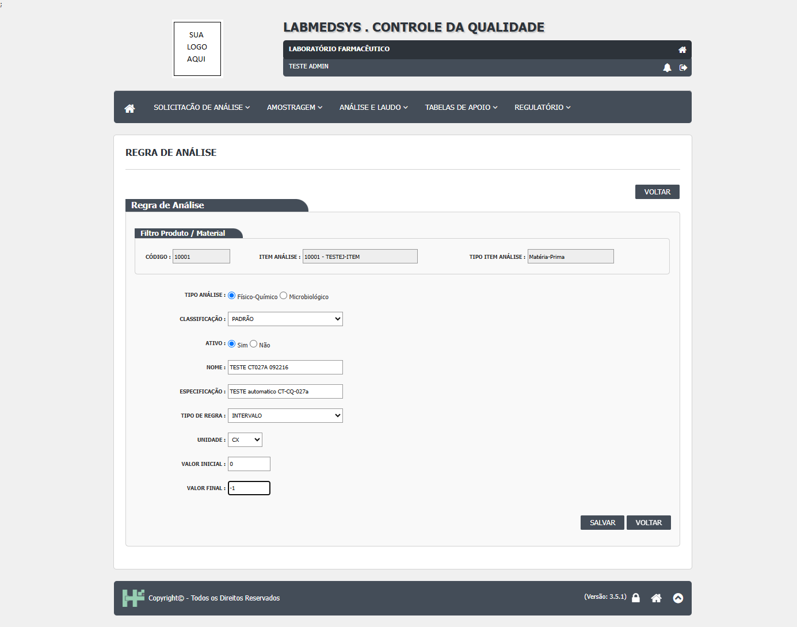
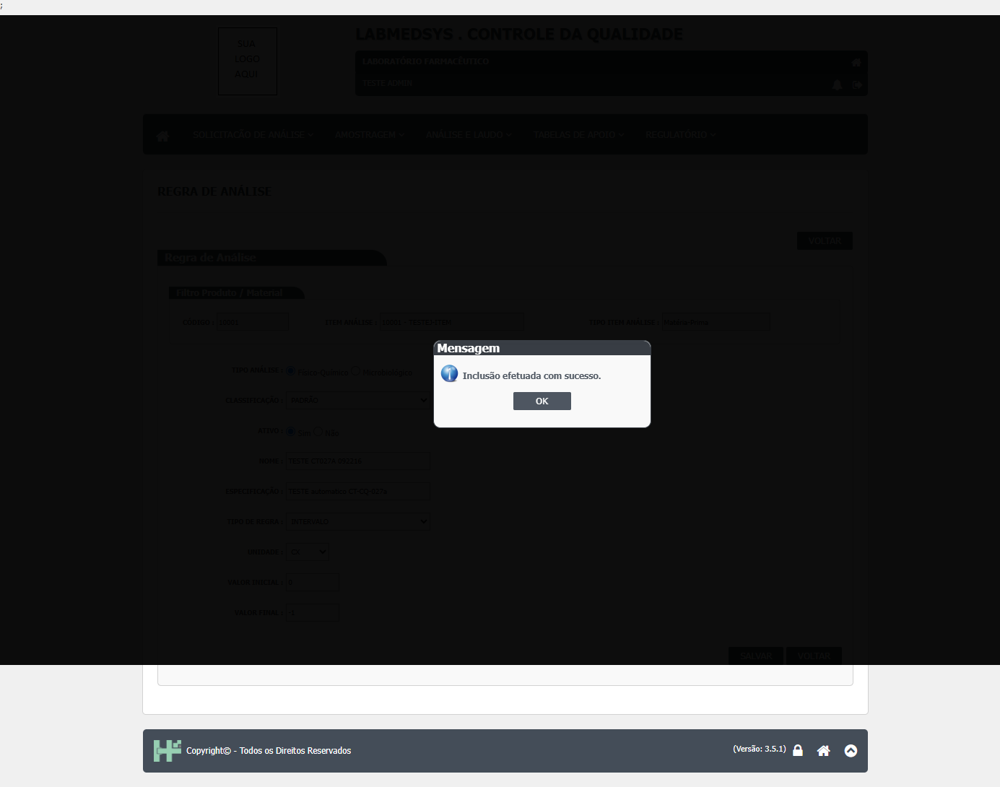
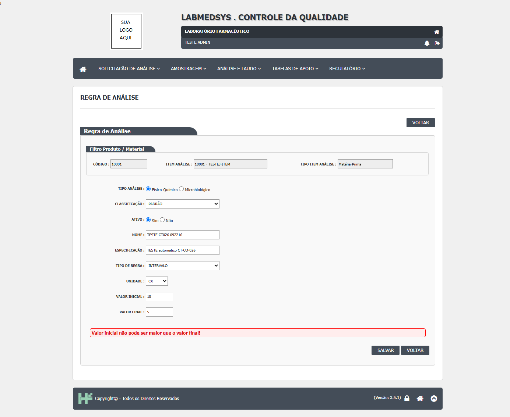
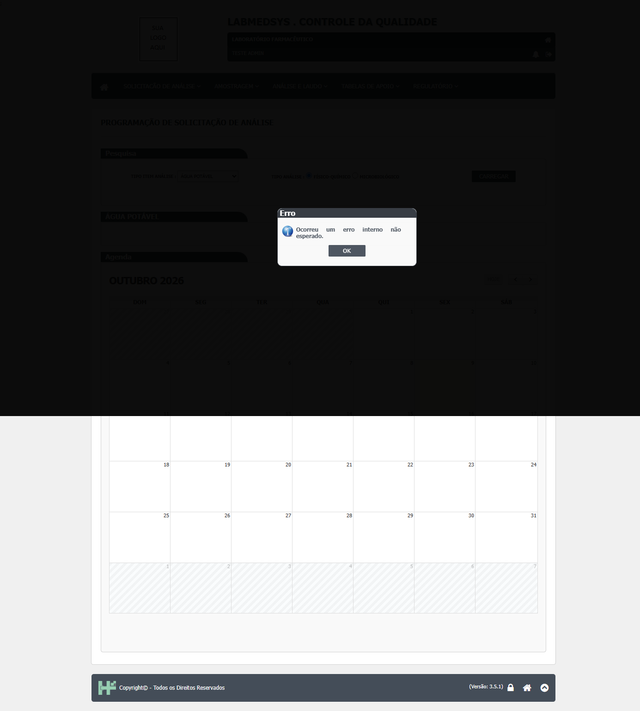

Para a equipe de desenvolvimento. Defeitos do módulo Controle da Qualidade encontrados nos testes de tela, com o passo a passo para reproduzir, as capturas, o trecho do código onde o problema está e uma sugestão de correção. Cada defeito traz também como confirmar a correção (o caso de teste a repetir). Atualizado em 10/10/2026.
Resumo
2 defeitos registrados, 2 em aberto. Pendentes por gravidade: 1 alta · 1 média · 0 baixa.
Gravidade: Alta = afeta a qualidade do produto, a conformidade com a ANVISA ou impede uma tarefa; Média = atrapalha, mas há como contornar; Baixa = incômodo ou texto.
Situação: Aberto: ainda não corrigido · Em correção: um desenvolvedor assumiu · Corrigido: o desenvolvedor entregou, falta o reteste · Validado: o reteste passou.
| Id | Defeito | Gravidade | Situação | Tela | Encontrado em |
|---|---|---|---|---|---|
| DV-CQ-002 | Regra de Análise aceita mínimo maior que o máximo quando há zero ou negativo | Alta | Aberto | Controle da Qualidade › Análise e Laudo › Regra de Análise (inclusão) | CT-CQ-027, 09/10/2026 |
| DV-CQ-001 | Programação de Solicitação de Análise dá erro interno ao carregar os pontos de água | Média | Aberto | Controle da Qualidade › Solicitação de Análise › Programação de Solicitação de Análise | CT-CQ-063, 09/10/2026 |
DV-CQ-002
Regra de Análise aceita mínimo maior que o máximo quando há zero ou negativo
| Gravidade | Situação | Tela | Caso de teste | Encontrado em | Norma afetada |
|---|---|---|---|---|---|
| Alta | Aberto | Controle da Qualidade › Análise e Laudo › Regra de Análise (inclusão) | CT-CQ-027 | 09/10/2026 (teste automático, revisado pelas capturas) | RDC 658/2022, arts. 253 e 255 (testes pelos métodos e especificações aprovados) |
O que acontece
Numa regra do tipo INTERVALO, o sistema só confere se o mínimo é menor que o máximo quando os dois valores são maiores que zero. Com zero, valor negativo ou máximo em branco, a conferência é pulada e a regra é gravada. Exemplo testado: mínimo 0 e máximo -1 foi aceito. A regra vira a especificação usada nas análises; com limites incoerentes, o resultado do ensaio é julgado contra limites errados e o laudo pode aprovar ou reprovar um lote indevidamente.
Como reproduzir
- Entrar no módulo Controle da Qualidade e abrir Análise e Laudo › Regra de Análise.
- Em TIPO ITEM ANÁLISE, escolher MATÉRIA-PRIMA; em ITEM ANÁLISE, digitar
TESTEe escolher um item; clicar em PESQUISAR e depois em INCLUIR. - Preencher: Tipo de análise Físico-Químico, Classificação PADRÃO, Nome
TESTE ..., Especificação qualquer, Tipo de regra INTERVALO, Unidade qualquer. - Em VALOR INICIAL digitar
0e em VALOR FINAL digitar-1. - Clicar em SALVAR.
Dados de teste usados: item 10001 - TESTEJ-ITEM (Matéria-Prima); regras criadas: TESTE CT027A 092216 (0 a -1) e TESTE CT027B 092216 (mínimo 10, máximo em branco).
Esperado e obtido
| Esperado | Obtido |
|---|---|
| Recusar, com a mensagem "Valor inicial não pode ser maior que o valor final!" (é o que acontece com mínimo 10 e máximo 5, caso CT-CQ-026). | "Inclusão efetuada com sucesso." A regra com mínimo 0 e máximo -1 foi gravada. Com mínimo 10 e máximo em branco, também gravou. |
Evidências

Figura 1: Formulário preenchido com mínimo 0 e máximo -1, antes de salvar

Figura 2: Depois de SALVAR: "Inclusão efetuada com sucesso."

Figura 3: Para comparar: com mínimo 10 e máximo 5 o sistema recusa corretamente
Onde está no código
Causa (confirmada): a conferência fica dentro de if (valorInicial > 0 && valorFinal > 0). Fora dessa condição nada é conferido. Além disso, compara os valores sem o sinal (Math.Abs), o que esconde negativos mesmo dentro da condição. O controlador só recusa quando os dois valores são zero, então um limite só (mínimo sem máximo) é aceito.
| Arquivo | Linhas | O que faz |
|---|---|---|
HSolutions.CQ.Domain/Analise/RegraAnalise.cs |
62-70 | InformarValorInicial: só confere quando os dois valores são maiores que zero; compara com Math.Abs. |
HSolutions.CQ.Domain/Analise/RegraAnalise.cs |
73-81 | InformarValorFinal: mesma condição e mesma comparação sem sinal. |
HSolutions.CQ.UI/Areas/Coleta/Controllers/RegraAnaliseController.cs |
381-391 | Recusa só quando mínimo e máximo são ambos zero; qualquer outro caso segue para as funções acima. |
HSolutions.CQ.Domain/Analise/AnaliseItem.cs |
101, 121 | No ensaio da análise a conferência é diferente (sem Math.Abs e aceitando máximo vazio): a mesma regra está escrita de dois jeitos. |
Caminhos a partir da pasta app/ do módulo (4.controle_qualidade/app).
Sugestão de correção
- Comparar os valores com sinal, sem
Math.Abs, e sempre que os dois limites forem informados: recusar quando mínimo > máximo, inclusive com zero ou negativo. - Tratar "não informado" como vazio (nulo), e não como zero, para que 0 seja um limite válido.
- Se o negócio aceitar limite de um lado só ("no mínimo 10" ou "no máximo 5"), deixar isso explícito na tela (por exemplo, tipos "Mínimo" e "Máximo") em vez de aceitar o campo em branco sem aviso. Ponto para validar com o CQ.
- Usar uma única função de conferência para a regra de análise e para o ensaio (
AnaliseItem.cs). - Conferir também no servidor (no controlador e no domínio), e não só na tela.
Como confirmar a correção
Repetir o CT-CQ-027 (mínimo 0 e máximo -1; mínimo 10 e máximo em branco) e o CT-CQ-026 (mínimo 10 e máximo 5). Acrescentar: mínimo -5 e máximo -20 (deve recusar) e mínimo -20 e máximo 5 (deve aceitar). O script homologacao/automacao/cq_piloto.py repete os dois primeiros sozinho.
Observações
O defeito já era previsto pela leitura do código (fluxo Regras de amostragem e de análise, ponto 4: "Limites inválidos passam") e foi confirmado na tela em 09/10/2026. A regra de negócio RN-CQ-064 diz que o tipo intervalo exige mínimo e máximo; o sistema exige só um dos dois.
DV-CQ-001
Programação de Solicitação de Análise dá erro interno ao carregar os pontos de água
| Gravidade | Situação | Tela | Caso de teste | Encontrado em | Norma afetada |
|---|---|---|---|---|---|
| Média | Aberto | Controle da Qualidade › Solicitação de Análise › Programação de Solicitação de Análise | CT-CQ-063 | 09/10/2026 (teste automático; repetido à mão em 10/10/2026) | RDC 658/2022, art. 243, VI (dados de monitoramento de água disponíveis ao CQ) |
O que acontece
Ao escolher um tipo de água e clicar em CARREGAR, a agenda aparece, mas a lista de pontos a programar fica vazia e surge a janela "Erro: Ocorreu um erro interno não esperado.". Sem a lista, não é possível programar coletas de água pelo CQ. Os pontos existem e estão ativos no cadastro do Principal (CADASTRO DE PONTOS DE ÁGUA: PTA-PW-01 purificada, PTA-POT-01 potável, TST-PA1 de teste).
Como reproduzir
- Entrar no módulo Controle da Qualidade e abrir Solicitação de Análise › Programação de Solicitação de Análise.
- Em TIPO ITEM ANÁLISE, escolher ÁGUA POTÁVEL (ou ÁGUA PURIFICADA).
- Em TIPO ANÁLISE, marcar Físico-Químico (ou Microbiológico).
- Clicar em CARREGAR.
Dados de teste usados: nenhum dado criado; pontos de água já cadastrados no Principal.
Esperado e obtido
| Esperado | Obtido |
|---|---|
| A lista de pontos de água do tipo escolhido, para programar as coletas na agenda; se não houver pontos, uma mensagem clara como "Nenhum ponto de água cadastrado para este tipo". | "Erro: Ocorreu um erro interno não esperado." A agenda do mês aparece vazia e a lista de pontos não aparece. Repetiu-se com ÁGUA POTÁVEL + Físico-Químico e com ÁGUA PURIFICADA + Microbiológico. |
Evidências

Figura 1: ÁGUA POTÁVEL + Físico-Químico: janela de erro depois de CARREGAR
Onde está no código
Causa (provável): a mensagem "Ocorreu um erro interno não esperado." só aparece quando a chamada ao servidor falha (erro HTTP). A agenda usa outra mensagem e abriu; logo, quem falha é a ação que lista os pontos. Ela grava no registro de erros do servidor uma linha começando por "Consulta de itens programáveis:", com a causa exata. Duas hipóteses: (1) o serviço de integração que traz os pontos de água do Principal está fora do ar ou mal configurado; (2) falta no banco a tabela TBL_TIPO_AGUA_CQ, que o código usa e os scripts do projeto de banco não criam (eles criam TBL_TIPO_AGUA).
| Arquivo | Linhas | O que faz |
|---|---|---|
HSolutions.CQ.UI/Scripts/CQApi.js |
20-21 | Em qualquer erro da chamada, mostra a mensagem genérica, sem o motivo. |
HSolutions.CQ.UI/Areas/SolicitacaoAnalise/Controllers/ProgramacaoSolicitacaoController.cs |
74-99 | ListarItensProgramaveis: em erro, registra "Consulta de itens programáveis:" no log e relança a exceção. |
HSolutions.CQ.Infrastructure/SolicitacaoAnalise/ItensProgramaveisService.cs |
49-66 | Busca o tipo de água no banco do CQ (ObterAguaPorId) e os pontos pelo serviço de integração; não trata retorno nulo antes de percorrer a lista (linha 66). |
HSolutions.CQ.Infrastructure/SolicitacaoAnalise/ItensProgramaveisService.cs |
95-120 | Chamadas ao serviço de pontos de água (ObterPurificadas, ObterPotaveis, ObterParainjetavel). |
Caminhos a partir da pasta app/ do módulo (4.controle_qualidade/app).
Sugestão de correção
- Primeiro, ler o registro de erros do servidor do CQ de 09/10/2026, por volta das 22h16, procurando "Consulta de itens programáveis:". Ele diz qual das hipóteses vale.
- Se for a tabela: criar
TBL_TIPO_AGUA_CQ(e as demais tabelas com_CQlistadas emhomologacao/4.controle_qualidade/06-modelo-de-dados.md, seção 7) ou alinhar o nome no mapeamento do código. - Se for a integração: conferir a configuração e o funcionamento do serviço de pontos de água do Principal.
- Tratar retorno vazio ou nulo do serviço: mostrar "Nenhum ponto cadastrado para este tipo" em vez de quebrar.
- Trocar a mensagem genérica por uma que diga o que falhou (sem expor detalhes técnicos ao usuário) e manter o detalhe no registro de erros.
Como confirmar a correção
Repetir o CT-CQ-063 (procurar a opção de frequência de coleta) e os casos de água e ambiente CT-CQ-060 a 068, que hoje estão bloqueados por este defeito. Conferir com ÁGUA POTÁVEL, ÁGUA PURIFICADA e um tipo de ambiente.
Observações
Falta testar um tipo de ambiente, que usa outro serviço; se ele carregar, a hipótese da tabela de tipo de água fica mais forte.